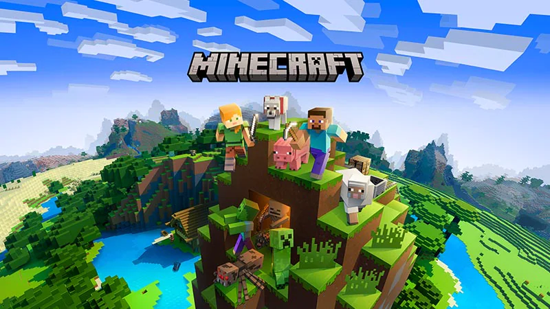

Gameplay
Minecraft focuses on allowing the player to explore, interact with and modify a dynamically-generated map made of
one-cubic-meter-sized blocks. In addition to blocks, the environment features plants, mobs and items. Some
activities in the game include building, mining for ore, fighting hostile mobs and crafting new blocks and tools by
gathering various resources found in the game. The game's open-ended model allows players to create structures,
creations and artwork on various competitive or collaborative multiplayer servers or their single-player maps. Other
features include redstone circuits for logic computations and remote actions, minecarts and tracks, and a mysterious
underworld called the Nether. A designated but completely optional goal of the game is to travel to a dimension
called the End and defeat the ender dragon.
Game modes
Minecraft has four basic game modes: Survival, Creative, Adventure, and Spectator. Java Edition has one additional
game mode, Hardcore, although it is a per-world flag instead of a true gamemode.
-
Survival:
In this mode, players must gather all their materials to build, craft items and tools and gain
experience points. There is a health, hunger, and armor bar, an inventory, and also a oxygen bar when
underwater, suffocating, or in lava.
If a player runs out of hearts (health), the player
dies and returns to the spawn point.
-
Creative:
This mode is for creating structures and experimenting. The player has access to an infinite amount of
almost all blocks and items available and can destroy them instantly. Players cannot die (except when falling
into the Void in Java Edition), health is not a concern, and players can fly. The player has access to items not
available in Survival mode, such as spawn eggs.
-
Adventure:
Players can interact with objects such as levers and buttons, and can interact with mobs. However, they can
break blocks only with certain tools, and place only certain blocks, as determined by the designer. This mode is
good for adventure maps.
-
Spectator:
When in Spectator mode, players can clip through blocks and fly freely. The player can't interact with blocks,
entities or their inventory.